🎬 Matt Pocock: The Most Valuable Skill to Learn in the Age of AI
📌 Synthèse Exécutive & Outils
Dans cette vidéo intitulée **Matt Pocock: The Most Valuable Skill to Learn in the Age of AI**, Nate Herk décortique les capacités pratiques d'automatisation et de développement propulsées par les modèles de pointe.
### 🛠️ Outils, Modèles & Logiciels Présentés
- **Opus 5.5 & Claude Code** : Modèles d'ingénierie et agents de codage autonome.
### 🔑 Points Clés & Enseignements Stratégiques
- Optimiser le niveau d'effort et le raisonnement des modèles IA pour des résultats industriels.
- Automatiser les cycles de création logicielle de bout en bout.
🛠️ Outils, Modèles & Logiciels Présentés
🔑 Points Clés & Enseignements Stratégiques
- ✦& Enseignements Stratégiques
- ✦Optimiser le niveau d'effort et le raisonnement des modèles IA pour des résultats industriels.
- ✦Automatiser les cycles de création logicielle de bout en bout.
⏱️ Chronologie & Transcription Complète Audio & Visuelle (Mot pour Mot)
Opus 5.5, Opus 5.5, Opus 5.5, Opus 5.5, Opus 5.5. This model is literally everywhere and for very good reason. It's smart, it's cheap, it has amazing taste, it is an incredible AI model. But with every AI model, you have a choice of effort, whether that be low, medium, high, extra, max, or ultra code.
Interface & Outils : X (anciennement Twitter)
Contenu textuel & Code : Un post X discutant de la disruption des "technical creatives" par l'IA, accompagnée d'une vidéo montrant un rendu 3D.
Action / Démonstration : Présentation visuelle d'un cas d'usage concret généré par IA pour illustrer le potentiel technologique.
 🔍 Agrandir
🔍 Agrandir
So in this video, I gave Opus 5.5 the same exact prompt and I ran it on every single effort level and we're gonna be comparing the results. We will look at the quality of all of the different actual outputs, But then we're also going to look at how long each one of these ran, how much it cost us if it was API billing, the total tokens, how many checks they ran, and how many questions they actually asked me throughout the process.
Interface & Outils : Logiciel de type tableau blanc numérique ou outil de gestion de projet (interface "Canvas").
Contenu textuel & Code : Tableau avec les colonnes : Low, Medium, High, Extra, Max, Ultracode. Lignes : Run time, API cost, Total tokens, Checks, Questions asked.
Action / Démonstration : Préparation de la structure de comparaison pour l'analyse des performances des différents niveaux d'effort de l'agent Opus 5.5.
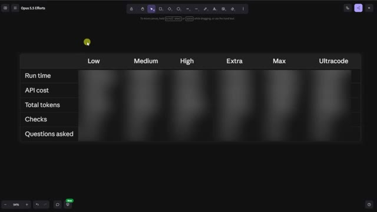
🔍 AgrandirAnd the results that we got are not what I expected at all, so I can't wait to share this with you guys. Let's not waste any time and just get straight into this one. Okay, so let's jump right into this one. I want to start off just by showing you guys the actual prompt that we used that we gave to every single one of these different agents. I'm going to go into the files over here, and we're going to open up this prompt markdown file, and I'll show you what we got. So here is the slash goal that I fed in.
Interface & Outils : Cursor (éditeur de code avec intégration IA), Opus 5.5 CLI.
Contenu textuel & Code : Texte affiché dans l'interface : "Hi Nate. This worktree has the effort-test task queued in PROMPT.md : build a walkable third-person 3D world of the AIS Live conference from your f.io recordings... I haven't started it. Should I begin, or did you have something else in mind?"
Action / Démonstration : L'agent IA attend une validation utilisateur pour initier la création d'un environnement 3D à partir de fichiers enregistrés.
 🔍 Agrandir
🔍 Agrandir
I said, you need to create me a 3D world that is a realistic tech conference that I can walk around in third-person view. You will look at this folder, which is my event recording assets from AIS Live. And this folder is a frame IO folder of 105 gigabytes of video recordings. This was a completely virtual event. Everything was recorded and all of the recordings are right here. I said, your goal is to take this event and turn it into a 3D explorable world that makes me feel like I actually went to a real in-person conference with different rooms, different tracks, different stages, blah, blah, blah. Feel free to use key.ai if you need to generate any images or videos. And you can also use anything else inside of my Herc 2 project, which is like my AI operating system. I said,
Interface & Outils : VS Code (ou éditeur Markdown), Plateforme de gestion de médias Frame.io.
Contenu textuel & Code : Texte du prompt : "You need to create me a 3D world that is a realistic tech conference... You will look at this folder...". Contenu Frame.io : "Sep 22, 2026", "GA Access (For AIS)", "VIP Access", "105.69 GB".
Action / Démonstration : Présentation du cahier des charges et des ressources techniques nécessaires à l'agent pour le projet de monde 3D.
 🔍 Agrandir
🔍 Agrandir
 🔍 Agrandir
🔍 Agrandir
 🔍 Agrandir
🔍 Agrandir
you'll be judged on creativity, design, physics, and the overall feel as I explore the 3D world that you built. And that was basically the end of the instructions. So as you can see on this left-hand side, I ran this through all of the different effort levels. Let's start off with low and work our way up to ultra code. All right. So here we have the result from low. Let's open this up and take a look. So we have AIS live, AI services summit in person finally, and we were able to click around. First of all, this doesn't feel very branded. Like this isn't the IS Live logo. It's not even our colors. So I don't love that, but let's get in here. Okay. This is way too bright. Um, we have a map in the top, right? We have a city back here. I can't tell what city
Interface & Outils : Éditeur Cursor (AI Code Editor).
Contenu textuel & Code : Liste de projets/sessions : "Session logs cost analysis", "Hello", "Extra", "High", "Max", "Ultracode", "Medium", "Low". Texte dans l'éditeur invitant à démarrer une tâche basée sur le fichier "PROMPT.md".
Action / Démonstration : Le curseur de la souris survole l'option "Low" dans la barre latérale pour illustrer le début de la démonstration comparative des niveaux d'effort de l'IA.
 🔍 Agrandir
🔍 Agrandir
this is. Okay. This is Chicago, which is kind of cool because you know, I live in Chicago, but anyways, on the top, right, we can see a map. We have a lobby. We have an expo hall. We have VIP lounge main stage. Also the map shows where every other person is and that's sinking live. So we can see registration. We can see day one, hyper agent keynote, live debrief. Cool. So it actually does know the agenda and then there's day two. So it found that that's good. We have these little balls in here that I can hopefully kick around. Okay. The face, Oh, look at this. If I go over here, all the people just disappear. Very bad. Very bad. Okay. So let's see. Can I sprint? Okay.
Interface & Outils : Environnement de conférence virtuelle 3D (logiciel de type métavers).
Contenu textuel & Code : Interface utilisateur avec mini-carte de navigation (Lobby, Expo Hall, VIP Lounge, Main Stage) et panneaux d'information contextuels sur les événements.
Action / Démonstration : Exploration et navigation d'un utilisateur dans un espace de conférence virtuel avec suivi en direct de la position des autres participants.
 🔍 Agrandir
🔍 Agrandir
 🔍 Agrandir
🔍 Agrandir
 🔍 Agrandir
🔍 Agrandir
I can move a little faster. I'll first go over here. There's some swag, um, AIS plus certified glido. Okay. So it's got the actual booths that we had in the virtual event. We had booths. So that's pretty cool. A little place to take pictures. Room C. Right now we have Tangy Frederick doing a workshop. Okay. But this isn't a video. As you can see, it's just an image. She's not moving. So that's just an image. These people are disappearing. They must be ghosts. Let's go over here to room A.
Interface & Outils : Environnement virtuel de conférence (type Gather.town ou similaire).
Contenu textuel & Code : Texte affiché à l'écran : "Step 1: Go to Settings", "Step 2: Go to API Integrations", "Step 3: Go to Create A New Token".
Action / Démonstration : Exploration de l'espace virtuel par un avatar pour rejoindre une session de workshop.
 🔍 Agrandir
🔍 Agrandir
 🔍 Agrandir
🔍 Agrandir
 🔍 Agrandir
🔍 Agrandir
We have Liberty White. Okay. Very cool. Your first 30 days in automation. Once again, it's just a still image and the people are glitchy. So not very good here. I'm going to go over to the main stage and see what we've got going. Okay, cool. So we have a main looking stage. The people are glitching. Really bad. That's not very good at all. Our video is actually moving. Like I saw my face here and I saw Devin's, but now they're gone. So I'm not sure what happened. Okay. It's, it looks like it's more of a slideshow. Nothing is actually being played still. Anyways, let's come in here.
Interface & Outils : Environnement de conférence virtuel 3D (type plateforme d'événement métavers).
Contenu textuel & Code : Texte affiché : "Workshop Room A", "Foundation track", "Main stage", "Now showing: Hyperagent Workshop".
Action / Démonstration : Navigation d'un avatar dans un espace virtuel d'événement en ligne.
We have more booths. We have hyper agent. We have Claude Code. We have more swag. Room B is Dave Ebelor. I'm assuming it's the same exact thing. We've got coffee. And then I'm assuming VIP lounge, VIP access only. That's pretty cool, but there's really nothing going on right here. That screen's way too bright. Okay. So I think you guys understand the vibe that we're getting here from Opus 5.5 on low effort. And here's where things get interesting. How much do you guys think that this ran for? How long? This one ran for 16 minutes and 43 seconds. How much do you think this cost?
Interface & Outils : Application de type tableau blanc collaboratif (ex: Eraser.io ou outil similaire) et environnement 3D (type plateforme événementielle Metaverse).
Contenu textuel & Code : Tableau comparatif des performances (Run time, API cost, Total tokens, etc.) pour différents modèles Opus 5.5.
Action / Démonstration : Présentation visuelle et structuration de données de benchmark pour une analyse de performance IA.
 🔍 Agrandir
🔍 Agrandir
$3.91 if this was API billing. I'm obviously using my subscription here, but we're just going to calculate this in API billing. Total tokens was 191,000. It did 22 checks. So the verification, 22 times it opened up the browser and ran different sorts of checks. So 22 categories of checks. And how many questions did it ask me? It asked me a total of zero questions throughout this slash goal prompt. Okay. So let's open up medium effort and see what we've got. Okay, here we go. Medium effort. We've got Nate Herc. We've got my badge. This is AI's life branded.
Interface & Outils : Logiciel de création de diagrammes ou tableau blanc numérique (type FigJam ou similaire).
Contenu textuel & Code : Tableau avec les métriques : "Run time" (16m 43s), "API cost" ($3.91), "Total tokens" (191.3K), ainsi que les lignes "Checks" et "Questions asked" en cours de remplissage.
Action / Démonstration : Le présentateur illustre les coûts et les statistiques d'exécution d'un processus automatisé via une présentation visuelle tabulaire.
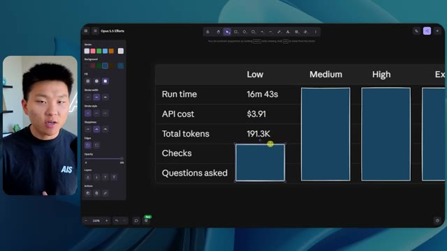
🔍 AgrandirSo this is already looking a little bit better. This feels like our color schemes that used our brand guidelines. Day one build, day two earn, VIP. Cool. Okay. I'm going to enter the venue. Okay. Wow. So similar sort of vibe. It's sitting in the background. This doesn't look like Chicago though, does it? No, this looks like a, honestly, this looks like a made up city. Either way, it's funny that they decided to do that. Let's see if I can move a little faster. Oh, wow.
Interface & Outils : Application Web/Plateforme d'événement virtuel "AIS Live".
Contenu textuel & Code : Interface utilisateur avec badge d'événement, instructions de contrôle clavier (WASD, Shift, etc.), compteur de sessions et d'assistants.
Action / Démonstration : Transition de l'interface d'accueil (Image 1) vers l'immersion dans l'environnement 3D de la conférence virtuelle (Image 2).
 🔍 Agrandir
🔍 Agrandir
 🔍 Agrandir
🔍 Agrandir
The people are interacting with me. Watch. If I go up to this guy, he just like raised his arm. Well, now he doesn't want anything to do with me at all. But all of these little robots here must be making decisions. I'm not sure if they're using Jev. They're definitely not. I didn't tell it to. Actually, my Jev key is in the back. I don't know. Maybe it did use it. Anyways, we can see here we have Workshop Room C, Agents Lab. Nice. So this one is actually being run. You can see that is a real video being played by Tangy. Everyone here is actually like working on a laptop. They're not glitching. This is pretty cool. Also, my badge is on my chest, which is pretty cool. I can come this way. We have a map up in the top right, as you guys can see, but I can come this way. We have an
Interface & Outils : Environnement de simulation virtuelle (métavers/type Gather.town ou plateforme de conférence 3D).
Contenu textuel & Code : Interface utilisateur affichant des informations de session : "Workshop Block 3 | Day 1 | Enterprise AI Services | Tangy Frederick".
Action / Démonstration : Navigation de l'avatar dans un espace virtuel et interaction avec un environnement de simulation sociale peuplé d'agents autonomes.
 🔍 Agrandir
🔍 Agrandir
 🔍 Agrandir
🔍 Agrandir
 🔍 Agrandir
🔍 Agrandir
expo hall. This is where we have the Glido booth. And this is actually playing. Yeah, it's playing the video of us talking about Glido. It's playing the video of Ed and I talking about our certification program. We've got the AIS Plus logo back here, which is kind of in a weird spot. This is a speaker slides and takeaways. So wow, this is all the resources that we gave out after the event. They're all sitting right there as well. We can see we've got a community spotlight. So this is Aiden talking about his deal that he landed and it's playing live. These people are watching.
Interface & Outils : Environnement de conférence virtuel / Métavers type Gather ou plateforme événementielle 3D.
Contenu textuel & Code : Titres et slides de présentation "AIS+ Certified", "Builders are pharmacists", "Speaker Slides & Takeaways", et interfaces de navigation utilisateur.
Action / Démonstration : Exploration visuelle et démonstration de la navigation au sein d'une expo hall virtuelle interactive.
 🔍 Agrandir
🔍 Agrandir
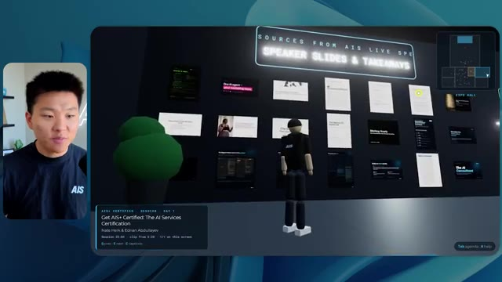
🔍 Agrandir 🔍 Agrandir
🔍 Agrandir
They're pretty engaged. We've got hyper agent. That was, that's what I meant. If you guys saw those people like raising their arms saying hi, that was kind of funny. Look, look, there he goes again. Anyways. Okay. Where am I now? Now I'm in the main lobby. We've got a coffee bar. We've got a big logo, which is the real logo. It's too bright, but we have the logo. We can see if we can come in here to the foundation track. We've got Sabrina Romanov and Liberty White. So different trainings right there. We can come into this room. This is the advanced track. So what's going on here. We've got Dave Ebelar and Saman talking about some different stuff in there. And now let's go take a look at the main stage. Oh, wait, there's a video of me up there. Is that like a VIP
Interface & Outils : Environnement de conférence virtuelle 3D (plateforme de métavers type Gather ou similaire).
Contenu textuel & Code : Textes d'interface "Main Lobby", "Registration, networking lounge, coffee bar" et mini-carte de navigation.
Action / Démonstration : Exploration de l'espace virtuel et interaction avec la foule d'avatars dans le hall et la salle de conférence.
 🔍 Agrandir
🔍 Agrandir
 🔍 Agrandir
🔍 Agrandir
 🔍 Agrandir
🔍 Agrandir
section? Yeah, we'll go check that out in a sec. But anyways, this is the main stage. This looks very, very nice. We've got a big stage. We've got like four people sitting up here. We've got the the three screens of Alex up there with hyper agent. Am I allowed to get on stage? Oh, and lets me up on stage. Okay. That's pretty nice. All right, guys, let's take a selfie. Let me get everyone in the background. Get in here. Anyways, that is pretty, pretty cool. Not every seat is filled though. So we need to work on that. But anyways, I'm going to run back over and see what that VIP section was. Okay. VIP lounge. I feel like this is like a worth the airport or something.
Interface & Outils : Environnement de conférence virtuelle 3D (Metaverse/Event platform).
Contenu textuel & Code : Interface utilisateur affichant "Hyperagent Keynote", "Alex McDonnell, Hyperagent", et des commandes de navigation (Session, Agenda).
Action / Démonstration : Navigation et exploration de l'espace virtuel par l'avatar de l'utilisateur.
Okay, cool. So now we've got the VIP sessions up here. VIP Q and a with Nate live video playback right here. Very, very cool. And we've got like a bar or something. Awesome. I would say that this is a pretty good output. Now, as far as the stats here, this one took one hour and 13 minutes to run. It would have cost us $12 and 44 cents. It used 490,000 tokens and it did 23 checks.
Interface & Outils : Environnement virtuel de type métavers / espace communautaire et interface de tableau de bord d'analyse de données (type canevas).
Contenu textuel & Code : Dans l'image 1 : interface "VIP Q&A with Nate". Dans l'image 2 : métriques techniques (Run time, API cost, Total tokens, Checks, Questions asked).
Action / Démonstration : Démonstration de l'interface utilisateur de l'espace virtuel, suivie de la présentation des résultats et statistiques de performance du système testé.
 🔍 Agrandir
🔍 Agrandir
 🔍 Agrandir
🔍 Agrandir
And it asked us a grand total of zero questions once again. All right, let's move on to high. This was already a pretty decent output and Anthropic themselves in their how to prompt Opus 5.5 video, or sorry, not video, article. They said to just start on medium and scale it up or down if you need. So that was a medium output. Let's move over to high and see what we got. Real quick, guys, I need to take a second to tell you about the sponsor of today's video, Hostinger. So both of these models just built me a working version of the same thing. And now I'm right where I always end up with something finished sitting on my laptop and no quick way to get it online. And that's the gap that Hostinger's connector closes. It's a free extension
Interface & Outils : - Image 1 : Tableau de bord de suivi de projet/données (probablement un outil comme Notion ou une interface web de suivi d'exécution). - Image 2 : Éditeur de code type Cursor ou VS Code avec interface agent intégrée (Claude Code/Codex).
Contenu textuel & Code : - Image 1 : Métriques comparatives (Run time, API cost, Total tokens, Checks, Questions asked) pour les modes Low et Medium. - Image 2 : Prompt de développement : "Build a single-page ROI calculator I can put on my agency's website as a lead magnet." ; état du processus : "Thinking... - 2.3k tokens", "Ruminating...".
Action / Démonstration : - Image 1 : Visualisation de données pour comparer l'efficacité et les coûts de l'IA. - Image 2 : Exécution d'un agent IA pour générer un fichier HTML autonome (calculatrice de ROI) et suivi des étapes de développement.
 🔍 Agrandir
🔍 Agrandir
 🔍 Agrandir
🔍 Agrandir
for your editor that pulls your Hostinger account into whatever you're already coding in. So VS Code, cursor, cloud code, codex, you name it. You sign in once with a single click, and from there, your agent can deploy the site, point a domain at it, set the DNS records, and check on your VPS without you ever having to leave the editor. So whichever one of these you end up liking better, the thing it built is a couple minutes away from a real URL on managed hosting. Connector is free on every hosting or plan, so if you still need the hosting underneath it, grab the unlimited plan with the link in the description and use code NATEHERK for 10% off. That also comes with a free domain and business email for the year. And it's still the cheapest way that I found to get something
Interface & Outils : Interface de gestion d'intégration Hostinger (Web/IDE), Claude Code (Terminal).
Contenu textuel & Code : État "Connected", version Node.js 24.13.0, liste des permissions d'accès aux outils (Websites, Domains, Subscriptions & Payments, Email Marketing).
Action / Démonstration : Validation de la connexion OAuth entre Hostinger et l'IDE, permettant aux agents IA d'accéder aux fonctionnalités de gestion de compte via le terminal.
 🔍 Agrandir
🔍 Agrandir
you built onto a real URL. So let's get back to the video. Okay. Once again, very, very branded. This is even better of a loading screen than the previous one. We've got this nice little effect in the background. We've got the logo. We'll enter the venue. Okay. Here we are. This looks pretty nice. We start outside and you can see that we have these flags for all the speakers, Wyatt, Casper, Alex, Ed, Aiden, Sabrina, Liberty. This is pretty cool. We got live blocks here.
Interface & Outils : Présentation ou face-caméra explicatif sans interface logicielle partagée.
Contenu textuel & Code : Explications orales et mise en contexte méthodologique.
Action / Démonstration : Explications face caméra et démonstration conceptuelle.
it took this picture from me, your host, Nate Herc, John, Dave, Nate Herc. There we go. Okay. The doors. Awesome. They're automatic sliding glass doors. I love that. We can see VIP check-in. We can see GA. We can come over here and we can check out the expo with different booths, community spotlight. You can also see that in the top left, I have a passport. So it's like, it will be showing how many of the places I've visited. All of these are real playback. We've got a resource wall with all of the different speakers. They've also got a networking session over here. So I'm going to come over real quick and see what that's all about. So we've got the AIS cold brew bar. We've got different community members that were spotlighted or highlighted.
Interface & Outils : Environnement de conférence virtuelle 3D (Metaverse/Application de simulation d'événements).
Contenu textuel & Code : Textes affichés : "Registration Concourse", "Main Stage", "VIP Check-in", "Expo Hall", "Get AIS+ Certified".
Action / Démonstration : Exploration et navigation dans une plateforme d'événement virtuel 3D par l'utilisateur.
 🔍 Agrandir
🔍 Agrandir
 🔍 Agrandir
🔍 Agrandir
 🔍 Agrandir
🔍 Agrandir
We've got the VIP wing. Wait, what? Pick up a wristband. Oh, I have to actually go get the wristband. Okay. Let me check in real quick. Wristband's already on. Wait, what? Okay. Oh, okay. Now the doors have opened for me. Cool. I can come into here. Oh, that just goes to the main stage. VIP lounge. This is a Q and A going on. It looks like very cool. I mean, I'm very impressed by how it's able to do this. Wow. Okay. So this is really good. What we did is we had VIP breakout rooms with different people. You can see that there's different rooms, different members of the AIS team going into stuff. This is really cool. This is very cool. That's a much better VIP
Interface & Outils : Environnement de conférence virtuelle 3D (type plateforme événementielle métavers).
Contenu textuel & Code : Interface utilisateur affichant des titres de sessions ("Price It Right", "Turn Your Expertise into a Service"), des noms d'événements, des mini-cartes de navigation et des commandes clavier en surimpression.
Action / Démonstration : Navigation de l'avatar utilisateur à travers différents espaces événementiels virtuels pour accéder aux zones VIP et aux sessions de travail.
 🔍 Agrandir
🔍 Agrandir
 🔍 Agrandir
🔍 Agrandir
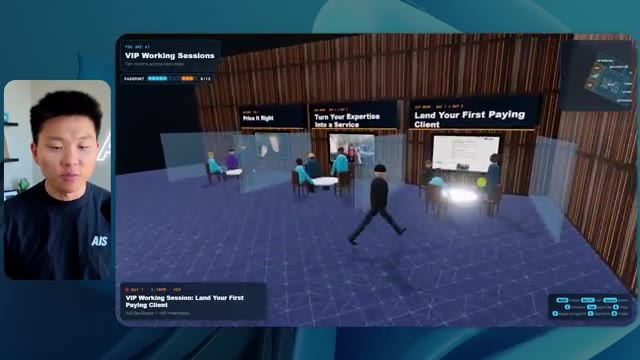
🔍 Agrandirexperience than what was shown in the first piece. Okay. VIP after party. Look at this. We've got a dance floor. We've got all these elements in here. We have the actual VIP after party playback right here. And there's a DJ booth. That is so funny. There's a bit of a bug right here, a glitch right there, but this is awesome. Oh, cool. So when I'm in here in the main stage, we get closed captions. You can see right here in the bottom of my screen, we're getting these closed captions of Wyatt actually talking up here. We've got lights. We've got the panel. Very cool. Nice main stage. I'm going to go over here. We can go to the foundation,
Interface & Outils : Environnement de conférence virtuelle 3D (Metaverse événementiel).
Contenu textuel & Code : Interface utilisateur affichant "VIP After-Party", "Main Stage", des compteurs de progression "Passport" et des menus de commandes de navigation (Move, Interact, Agenda, etc.).
Action / Démonstration : Navigation et exploration d'un événement en ligne au format 3D interactif.
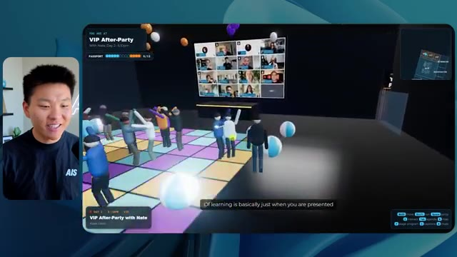
🔍 Agrandir 🔍 Agrandir
🔍 Agrandir
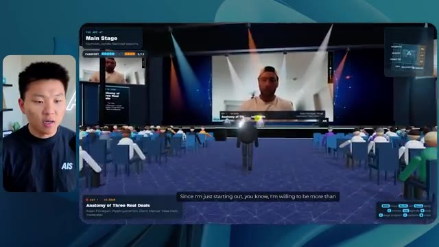
🔍 Agrandiradvanced, and the enterprise tracks over here. So let's see. We have anatomy of a three real deals. We've got hyper agent. We've got the evals with Nate and Ed in here. We've got Dave going on in the advanced stuff. This is really nice. I mean, obviously each, each of these outputs so far, low was okay. Medium was better. High has been even better. Let's see if that trend continues and let's go ahead and see what this cost us. So high ran for one hour and seven minutes. So a little bit quicker than medium, it would have cost us $16 and 31 cents. It used half a million tokens, 509,000. It did 22 checks. And it also asked us, well, actually, no, I was wrong. This
Interface & Outils : Environnement virtuel 3D (type métavers) et outil de tableau blanc/diagramme (Opus 5.5 Efforts).
Contenu textuel & Code : Métriques de performance IA : temps d'exécution, coût API en USD, nombre de tokens et nombre de vérifications effectuées.
Action / Démonstration : Navigation au sein d'un espace virtuel suivi de la présentation d'un tableau comparatif d'analyse de coûts pour différents niveaux d'efforts d'agent (Low, Medium, High).
 🔍 Agrandir
🔍 Agrandir
one asked me one question and spoiler, it was the only one that asked us a question throughout all of this. So let's see, we've got three left extra max and ultra code. Let me pull open extra and we'll see what we got. Okay. So this one looks pretty good. I would honestly say so far, the loading screen high was the best. The one that we just saw, but anyways, let's enter AIS live.
Interface & Outils : Interface de type canevas (probablement Claude Projects ou similaire).
Contenu textuel & Code : Tableau de données techniques : Run time (16m 43s à 1h 07m), API cost ($3.91 à $16.31), Total tokens (191.3K à 509.3K), Checks (22-23), Questions asked (0 à 1).
Action / Démonstration : Le présentateur passe en revue les métriques de performance des différentes configurations d'agents pour justifier le choix de la configuration "Extra".
 🔍 Agrandir
🔍 Agrandir
Whoa. Okay. So we have like little sound bites. I can chat with people. The tool war panel settled a few debates for me. Nice. Good perspective there. We're outside again. We have these different banners, although they're all the same. They don't say like different people's names. So big AIS live logo. Workshop wing is over here. And let's go through the sliding glass doors and see what we've got. So we've got the AIS cafe. The map is in the bottom right, and it's not too descriptive.
Interface & Outils : Environnement virtuel 3D (métavers) de type jeu vidéo.
Contenu textuel & Code : Aucun code source, terminal ou interface d'automatisation n'est présent. Il s'agit d'une interface de navigation en jeu.
Action / Démonstration : Navigation et déplacement d'un avatar dans un espace virtuel simulant un événement ou une conférence.
I like how the other maps have told us what, like where things were, but this one looks very professional. We can see here's the main stage. Let's hop in here real quick. They've all got these balls flying around, which I think is pretty funny. The AIS beach balls. We have me up there speaking. I think I was introing one of the days. Let's keep on moving here to the workshop room on this left side. Okay. So here we've got the Hyper Agent Theater. We've got this sponsored session in here by Hyper Agent, but it's showing us what's coming up in here as well. It's really funny that we can chat to people. Salmon built a voice sales rep live. The price it right room was packed. Did you grab the VIP companion guide? That's so funny. We have the advanced track in
Interface & Outils : Environnement virtuel 3D interactif (plateforme d'événementiel en ligne type Gather ou équivalent métavers).
Contenu textuel & Code : Interface utilisateur HUD incluant une mini-carte, un bouton de chat, des sous-titres en direct ("Live Captions") et une signalétique textuelle ("Main Stage", "Workshops", "Enterprise AI Services").
Action / Démonstration : Navigation et exploration de l'espace virtuel par l'utilisateur pour montrer les différentes salles et fonctionnalités de l'événement.
 🔍 Agrandir
🔍 Agrandir
 🔍 Agrandir
🔍 Agrandir
 🔍 Agrandir
🔍 Agrandir
here. Once again, we've got live playback. Is that live playback? Oh, okay. It started once I got in, but I can take a seat. Oh my. I can watch this. I can stand up. I want to sit in the front. That's pretty cool. That's very nice. I like that. And you know what I noticed so far? The actual character that I'm playing kind of looks like me. I think it modeled it off of my thumbnail pictures or something. Anyways, we have Sabrina in here, room host here, grab any open seat. Okay, cool. And I really liked the sitting functionality. It's kind of funny. Like we could actually attend this workshop and participate. Anyways, it's showing us the speakers. It's showing us the
Interface & Outils : Environnement de conférence virtuel (métavers/plateforme d'événement en ligne).
Contenu textuel & Code : Titres des ateliers : "Workshop Block 2: Advanced Build a Voice AI Sales Bot" et "Workshop Block 2: Foundations Build Your First AI Content Engine".
Action / Démonstration : Navigation et immersion dans un environnement de conférence virtuelle pour suivre des ateliers de formation en direct.
 🔍 Agrandir
🔍 Agrandir
 🔍 Agrandir
🔍 Agrandir
 🔍 Agrandir
🔍 Agrandir
agenda. There's a little red carpet here to take some pictures. We can strike a pose. Oh, wow. That's pretty cool. Resource library, get AIS Plus certified, Glido, Hyper Agent, AIS Plus, three real deals. Awesome. I mean, I would definitely say so far, each one is getting better. And we didn't even check out the VIP section yet, the VIP lounge. Let's go up here real quick. Hopefully I can get in. Nice. We've got tooling reset. These are the different rooms we could go in. So once again, I could grab the worksheet and I could try to understand how to price my stuff. This is so cool. This is definitely better than the previous one where we kind of just
Interface & Outils : Environnement virtuel de conférence (plateforme type metaverse pour événements en ligne).
Contenu textuel & Code : Signalétiques : "Expo Hall", "Hyperagent Title Sponsor", "Glido", "VIP Lounge", "Workshops". Menu interactif : questions stratégiques sur le business ("What's your gut floor number?", "If you doubled your rate, what would change?").
Action / Démonstration : Exploration de l'espace virtuel par l'avatar, déplacement dans le hall et interaction dans le salon VIP.
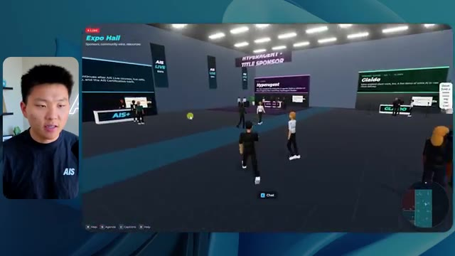
🔍 Agrandir 🔍 Agrandir
🔍 Agrandir
 🔍 Agrandir
🔍 Agrandir
like looked at stuff. Awesome. I can get behind the bar and come in here. This is very nice. Okay. So as far as statistics go, this one ran for an hour and a half. It costs 25.92 bucks. I don't know why I say point $25, 92 cents. It was 733,000 tokens and 34 checks. So it had the most checks so far by far. And it asked us zero questions. I can't wait to see what we got here from max and ultra code. Okay. Here is max loading screens, boring, but it's on brand and it has our logo.
Interface & Outils : Outil de création de diagrammes (semblable à Excalidraw ou similaire).
Contenu textuel & Code : Tableau de données affichant les statistiques : temps d'exécution (ex: 1h 31m pour Extra), coût (ex: $12.44, $16.31), nombre de tokens (ex: 419.2K, 509.3K) et nombre de checks (ex: 23, 22).
Action / Démonstration : Le présentateur présente les résultats statistiques d'un test automatisé en pointant du doigt les données spécifiques dans le tableau.
 🔍 Agrandir
🔍 Agrandir
So that was good. I like that. We will go ahead and enter AIS live. Ooh, nice little animation here that brings us in. Once again, the character looks like me. They've all looked like me. I mean, sort of, we have sitting in the background. This looks like Chicago. Like I mentioned earlier, a lot of these are playing sounds and I'm not including that because it would be very distracting for you guys to try to listen to what's going on as well as me speaking. So there is like some slight music in all these. I hate how this is walking. This walking is really, really bad. I mean, the walking, yeah, I don't like this at all. So that's not great. But besides that, let's go in and explore. Notice these shadows when I walk in, they like really switch. I'm not sure why that is,
Interface & Outils : Environnement virtuel 3D interactif (application type métavers ou plateforme de conférence virtuelle).
Contenu textuel & Code : Interface utilisateur HUD incluant : nom du lieu ("Arrival Plaza"), calendrier, mini-carte en bas à droite, et un panneau d'information en haut à droite sur le panel "The Tool War Panel: What Actually Makes Money in 2026".
Action / Démonstration : Navigation et déplacement d'un avatar dans un espace numérique 3D pour accéder à une zone de conférence virtuelle.
 🔍 Agrandir
🔍 Agrandir
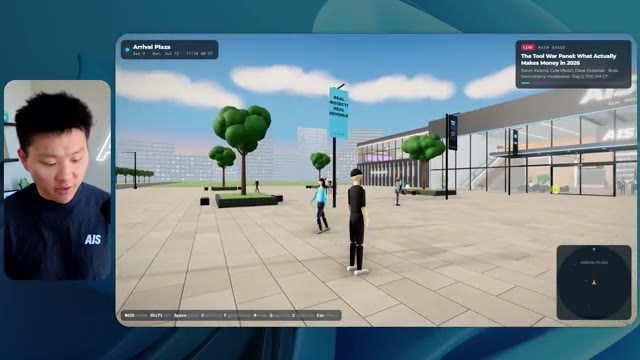
🔍 Agrandir 🔍 Agrandir
🔍 Agrandir
but anyways, we can chat with people in here too. Hyperagent booth is right where you walk into the expo. All good. Okay, cool. I can keep clicking E to make them change what they say. We've got the speakers right here. That looks pretty good. Although we definitely had everyone's profile picture. So I'm not sure why that's not included there. We see people taking pictures right here. I love that. And it saves a little picture. Okay. The map also isn't super, like doesn't give me a great explanation of what's going on, but I like these booths. These are cool. I think these booths are the best that I've seen so far. Like they just look nice. They've got reps. There's nice like slides behind them. Yeah. These booths are cool. Okay. We have a little featured theater
Interface & Outils : Plateforme événementielle virtuelle 3D (type métavers pour conférences en ligne), avec HUD de contrôle, mini-map en bas à droite et menus contextuels.
Contenu textuel & Code : Textes informatifs sur les panneaux (noms des intervenants, titres de panels comme "The Tool War Panel"), bulles de chat ("Oh! Excuse me"), et titres de stands.
Action / Démonstration : Navigation et exploration de l'espace virtuel par l'avatar, interaction avec les éléments de l'interface pour visualiser les stands et les profils des participants.
 🔍 Agrandir
🔍 Agrandir
 🔍 Agrandir
🔍 Agrandir
 🔍 Agrandir
🔍 Agrandir
going on over here. It's Casper. Although why is this not playing? I feel like this should be playing, right? Like in the other ones, they were always playing. We can talk to some other people over here. Coffee's free. Blah, blah, blah. Amy Simpson, Matt Wolf. Nice. Okay. This is just the networking area that we're in right now, but we can see in the top right. We can also see what's live on the main stage right now. It is a tool war panel. So let's head in here. We've got Devin, Cole, Dave, and Russ chatting in here. We've got sort of AV, some light stuff going on back here.
Interface & Outils : Environnement virtuel de type "Metaverse" ou plateforme de conférence virtuelle 3D (type Gather ou équivalent).
Contenu textuel & Code : Texte informatif sur les revenus ("Real Projects, Real Revenue"), noms de intervenants, titres de sessions ("The Tool War Panel").
Action / Démonstration : Navigation de l'avatar dans l'espace virtuel par le présentateur.
Switch the main stage to what actually matters right now. So I can switch the topic. Cool. So I just switched to me and Matt. We can go to anatomy of three real deals. That's pretty cool. The stage looks good. We've got a nice little panel up here. Can I get on the stage? Nice. Nice. Well, I can't go too far, actually. All right, everyone, let me take the selfie. Everyone get in this. I can also take a seat in this audience over here and just enjoy the session.
Interface & Outils : Environnement virtuel 3D de conférence en ligne (plateforme de type métavers pour événements virtuels).
Contenu textuel & Code : Interface utilisateur affichant des menus de navigation (WASD, shift, espace), des titres d'événements et des instructions interactives ("AV desk - switch the Main Stage...").
Action / Démonstration : Navigation et déplacement d'un avatar au sein d'une interface de conférence virtuelle pour simuler une présence sur scène.
Very cool, very cool. Okay, let's go over here. I see an upstairs section. So it's funny how they all choose to put the VIP section upstairs. I mean, I don't hate it. Oh my gosh, they have an escalator. No way. I'm gonna chat with this guy on the escalator. Glenn has 15 years of agency experience. His land and expand stuff was gold. Great work, Glenn. Cool, so I'm gonna, I can't even get past this guy though.
Interface & Outils : Plateforme d'événement virtuel en 3D (type Gather ou environnement de networking immersif).
Contenu textuel & Code : Interface utilisateur affichant : "Lobby - Escalator to VIP Level", "VIP LEVEL", une mini-carte, et une bulle de dialogue : "Glenn has 15 years of agency experience. His land-and-expand stuff was gold."
Action / Démonstration : Exploration de l'espace virtuel et interaction sociale/networking avec un autre participant via l'interface intégrée.
 🔍 Agrandir
🔍 Agrandir
 🔍 Agrandir
🔍 Agrandir
 🔍 Agrandir
🔍 Agrandir
Oh, I had to jump over him. Okay, VIP level, badge required. Oh my gosh. Are you kidding me? I have to go get my badge. Okay, cool. Now it shows that I'm an actual VIP and I can go up here to the VIP section. We have nice little working sessions back there, which we can hop in. I wonder if it'll let me like sit down in here. I can just chat. Can I participate? It's not letting me sit and participate. That's okay. We've got the pricing war room. Oh, this might be the after party. Let's go see what's going on back here. Or maybe I just have to enter from over here. Okay. That's weird. I just had to enter from over here. This after party is not as cool as the other one. But anyways, let's go see what's going on back here
Interface & Outils : Plateforme événementielle virtuelle (type metaverse/événementiel numérique).
Contenu textuel & Code : Interface utilisateur affichant des informations sur l'événement ("Anatomy of Three Real Deals"), le profil utilisateur de Nate Herk avec badge "VIP", et des commandes de navigation (WASD, shift, space).
Action / Démonstration : Navigation et déplacement de l'avatar dans les différentes zones de la conférence virtuelle, incluant l'accès à la section VIP.
 🔍 Agrandir
🔍 Agrandir
 🔍 Agrandir
🔍 Agrandir
 🔍 Agrandir
🔍 Agrandir
in the workshops. Okay. That was not good. Look at this. You can see everything and I just glitched and now boom. So that's not good. I would say overall, I mean, you guys are getting the vibe of how this works, but I would say that the one before, which was, I believe high, I liked that one better. I can't sit in these chairs either. Yeah. So I don't like the walking in this one.
Interface & Outils : Environnement de conférence virtuel (métavers/plateforme d'événement en ligne).
Contenu textuel & Code : Interface utilisateur HUD avec mini-carte, commandes de navigation (WASD, Shift, Space), et textes affichés au-dessus des avatars (ex: « Devin's closing keynote had 264 AI services deals in Q1 2026 alone »).
Action / Démonstration : Navigation et déplacement de l'avatar dans l'espace virtuel de l'événement pour rejoindre un atelier (workshop).
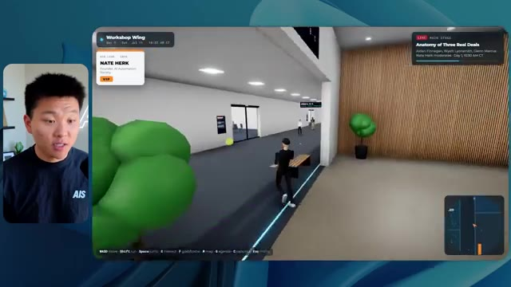
🔍 Agrandir 🔍 Agrandir
🔍 Agrandir
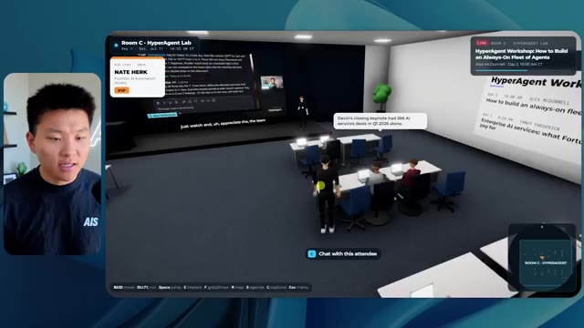
🔍 AgrandirI don't like the vibe as much and there's some bugs. So, so far, if we want to go to our list, I like extra extra was the one that I liked the most so far. But anyways, this one was max. This one was max right here. So let's see how long this ran for two hours and 28 minutes. So it ran for a long time, $50 and 38 cents, 1.18 million tokens. So it actually hit a compaction and had to auto compact. And then it did 51 checks. Did it really though? Cause there was a lot of bugs in there. And anyways, this one asked us zero questions. So, so far each time pretty much has gotten more expensive and took longer besides right here. But these basically
Interface & Outils : Logiciel de tableau blanc interactif ou outil de mind mapping de type Canvas.
Contenu textuel & Code : Tableau de données comparatives : - Colonnes : Medium, High, Extra, Max, Ultracode. - Lignes : temps d'exécution (ex: 1h 13m), coût en dollars (ex: $12.44), volume de jetons (ex: 419.2K) et métriques de performance/erreurs.
Action / Démonstration : Analyse visuelle et comparaison des performances des différents modes d'exécution d'un agent IA.
 🔍 Agrandir
🔍 Agrandir
took like very similar amount of time, but every time it's used more tokens because they've been thinking more. And then, you know, those tokens are going to cost more. But anyways, let's move on to the final one, which is ultra code. So we would really hope that this one is the best one. So let's hop into this local host and see what we've got. Okay, cool. Look at this badge. It's a nice badge host all access. We've got a nice little visual right here. We'll go ahead and enter AIS Live. Cool. Okay. Welcome in, Nate. I like the walking. It feels realistic. I like the logo, although it's missing the little red dot that makes it look like live. The map in the top right
Interface & Outils : Application de tableau blanc virtuel (FigJam ou similaire) et environnement de jeu ou simulation 3D.
Contenu textuel & Code : Tableau de données techniques sur l'IA (Image 1) et interface utilisateur d'un jeu/simulation avec texte "AIS LIVE" et "Registration & Lobby" (Image 2).
Action / Démonstration : Présentation comparative des coûts/performances des modèles IA et démonstration visuelle d'un environnement numérique généré.
 🔍 Agrandir
🔍 Agrandir
 🔍 Agrandir
🔍 Agrandir
is labeled a little bit better, so I can see what's going on. I'm going to come in here and collect my VIP wristband real quick. Okay, nice. It's also telling me what to do. So in the top left, it says scan in at the VIP gate at the lobby east wall. So I believe east would be this way, right? Never eat soggy waffles. Yeah. VIP wings, scan wristband. Okay, cool. Now I'm in the VIP section. I can see these different rooms. The tooling reset. Live video is being played. I'm able to see the closed captions right there of what's being talked about. It's also playing the sounds, but I'm just not playing the audio for you guys because I don't want to overwhelm.
Interface & Outils : Environnement 3D immersif/métavers (plateforme d'événement virtuel).
Contenu textuel & Code : Texte à l'écran : "Registration & Lobby", "Scan in at the VIP gate", "VIP Wing", "VIP Room 5 - Tooling Reset / Solo to Real Business", mini-carte interactive.
Action / Démonstration : Navigation et exploration de l'avatar dans les différentes zones de l'événement virtuel, suivant les instructions textuelles fournies par l'interface.
 🔍 Agrandir
🔍 Agrandir
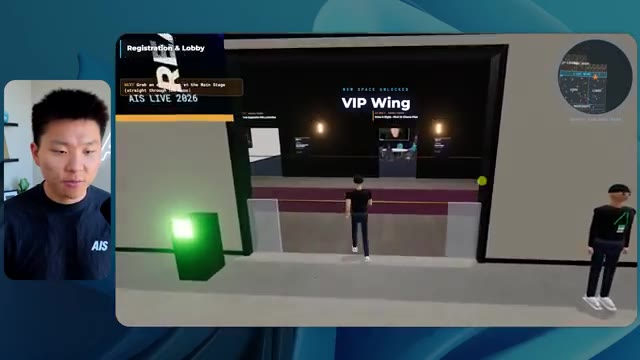
🔍 Agrandir 🔍 Agrandir
🔍 Agrandir
Once again, this one's working with Cody and Mustafa in there. That's awesome. Live video. The video doesn't play until you walk in though. So honestly, I think that's a good call. As soon as I walk in though, the video starts. Nice. Nice touch. All these rooms. Awesome. Yeah. I mean, this feels very premium. Here's a pricing war room. Let's hop in here. Me and John in there.
Interface & Outils : Plateforme de conférence virtuelle 3D (type Gather, vSpatial ou solution personnalisée similaire).
Contenu textuel & Code : Textes d'interface "VIP Wing", "VIP ROOM 1 - WORKING SESSION", "Price It Right - First 10 Clients Plan", et une mini-map en haut à droite.
Action / Démonstration : Navigation de l'avatar dans l'espace virtuel déclenchant la lecture automatique d'une vidéo dans une salle de réunion.
 🔍 Agrandir
🔍 Agrandir
And then we have nice the after party. This after party is not as busy yet. And we have more beach balls for some reason, but this after party is cool. I mean, it gives us the good vibe and there's the playback right here of our after party Q and a, this is all live as well. Sweet. Okay. Let's head into the main stage. It's also prompting me to grab an aisle seat at the main stage, which is straight through the expo. So actually let's go through the expo first. What are you building. There's a lot of people talking about different things over here. Wow. There's also like a little, a basketball thing. Can I throw it? I can. Do I have to look up to throw it up? Okay.
Interface & Outils : Environnement de métavers ou espace communautaire virtuel 3D (type Gather.town ou plateforme similaire).
Contenu textuel & Code : Interface utilisateur HUD avec des objectifs de mission ("Get AIS+ Certified"), une mini-carte, des éléments interactifs (panneaux, notes post-it) et des zones de texte contextuelles.
Action / Démonstration : Déplacement de l'utilisateur à travers différentes sections de l'espace virtuel pour présenter les fonctionnalités de la plateforme et les zones interactives.
 🔍 Agrandir
🔍 Agrandir
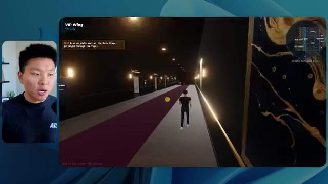
🔍 Agrandir 🔍 Agrandir
🔍 Agrandir
Well, not great. But anyways, we have an AIS plus booth. We have the Glido booth. Is that playing live? Yeah, that definitely is playing live. Nice. We have the hyper agent booth. We have other stuff over here. Okay, cool. I'm going to go into the main stage and see if we can grab an aisle seat. As soon as we walk in, everything starts playing. We've got a very nice stage vibe. How do I grab an aisle seat though. There we go. I had to find the right one. Grab the aisle seat. There's no one on the stage, which is weird. I liked when they had people on the stage in the past versions.
Interface & Outils : Environnement virtuel interactif 3D (type plateforme de conférence en ligne).
Contenu textuel & Code : Texte affiché à l'écran : "Expo Hall", "Main Stage", "Grab a seat", "Move to stand back up".
Action / Démonstration : Navigation et déplacement de l'avatar de l'utilisateur à travers l'environnement virtuel pour rejoindre la salle de conférence principale.
Let's take a quick selfie. Anyways, we got me and Pat up there. Pat is all dressed up like a construction worker. As you can see, we were doing a little mock discovery call in that example. I'm going to come back through the expo and we're going to go out here to the workshop wing and just check out if these rooms basically are the exact same as they should. Now I can't actually chat with people. I used to be able to, in the previous versions, chat with people, which I thought was a really nice touch. And we have workshop a foundation track. Can I sit down?
Interface & Outils : Environnement virtuel de conférence/événement en ligne (type métavers).
Contenu textuel & Code : Interface utilisateur de navigation virtuelle : mini-carte en haut à droite, objectifs de mission ("Explore every space"), noms des salles et avatars des participants.
Action / Démonstration : Navigation et exploration de l'utilisateur à travers les différents espaces de l'événement virtuel.
I can't sit down. I don't know. We do have Liberty actually talking right now and she is speaking and we can hear it. So that's nice, but it's not letting me sit down. And look at this. I'm getting pretty glitchy right here. That was glitching the way I was walking. It like wasn't letting me walk. That's not good. Same thing. We got this advanced track in there. Awesome. So overall, they have a very similar vibe. I will say I'm impressed by the way they were able to tell a story out of what we were doing. Speaker takeaways library. Okay. This is cool. I don't think we saw this from different places, but these are like the resources and showing some cool stuff. Oh, wow. I
Interface & Outils : Environnement de métavers ou plateforme d'apprentissage virtuel 3D.
Contenu textuel & Code : Texte affiché à l'écran : "Workshop A - Foundation Track", "Workshop B - Advanced Track", "Speaker Takeaways Library", ainsi que des sous-titres contextuels (ex: "All right", "One problem").
Action / Démonstration : Navigation et déplacement de l'avatar dans différents modules de l'espace virtuel, malgré les problèmes de latence et de "glitch" mentionnés par l'utilisateur.
 🔍 Agrandir
🔍 Agrandir
 🔍 Agrandir
🔍 Agrandir
 🔍 Agrandir
🔍 Agrandir
can actually open all of these things and we can take pictures right here as well. Nice. Take a photo. I can save this as well. Like I can actually download this. And now we have this photo that we just took at this AIS live event. All right. Well, I think it is time for me to make some conclusions, but first let us see what this run cost us. This took a one hour and 35 minutes. So it was much faster than max. It only took $18 and 69 cents. Wow. So it was a little bit more expensive than high, cheaper than extra and much cheaper than max. It also ran 606,000 tokens and 42 checks with zero questions. Now, one other thing that's interesting to note is that all of
Interface & Outils : Visionneuse d'images Windows (Image 1), outil de diagramme/tableau blanc numérique type Excalidraw ou similaire (Image 2).
Contenu textuel & Code : Photo de l'événement virtuel AIS (Image 1) ; tableau de données comparatives incluant "Max" et "Ultracode" avec des durées et des montants en dollars (Image 2).
Action / Démonstration : Le présentateur affiche la capture photo réalisée lors de l'événement (Image 1) puis passe à la présentation de données récapitulatives sous forme de tableau (Image 2).
 🔍 Agrandir
🔍 Agrandir
 🔍 Agrandir
🔍 Agrandir
these runs, none of them used a sub agent. I looked through and I made sure none of them used sub agents. They didn't want to delegate any work around, which was interesting. So these tokens are what was reflected inside of that session. Obviously, like I said, this one went over, you know, 950K, so, or whatever the compaction window is. I never usually let it get that high, but because this was a slash goal and I wasn't involved, this one had to compact, but the rest of them just ran in this one session. And these are the overall stats. And also real quick on the UltraCode stuff, guys, I don't know if you've been noticing this, but when I've been running UltraCode lately, it's just felt weird. It's felt a little buggy. I, a couple of times I've ran it
Interface & Outils : Logiciel de tableau blanc ou outil de présentation (type Figma/FigJam ou application propriétaire).
Contenu textuel & Code : Tableau avec colonnes : "Low", "Medium", "High", "Extra", "Max", "Ultracode". Les données montrent des variations significatives, notamment pour "Max" avec 1.18M de jetons et 51 vérifications.
Action / Démonstration : Le présentateur commente les résultats chiffrés pour démontrer l'absence de sous-agents délégués lors des sessions de test.
 🔍 Agrandir
🔍 Agrandir
and been like, is it even running UltraCode? It did quite a few more checks than these other ones, but for some reason it just didn't feel right because essentially what UltraCode is, is it's extra effort and then it's just like using more dynamic workflows in order to do things. And so through all my digging on the session logs and even when I was watching this thing build in UltraCode, it wasn't spinning up any of these dynamic workflows and I tried this a few times.
Interface & Outils : Application de tableau blanc (Canvas / Diagramming tool).
Contenu textuel & Code : Tableau avec les colonnes : Low, Medium, High, Extra, Max, Ultracode. Les lignes indiquent : Run time, API cost, Total tokens, Checks, Questions asked.
Action / Démonstration : Présentation statique des données comparatives illustrant les coûts et temps d'exécution selon le niveau de complexité de l'agent.
 🔍 Agrandir
🔍 Agrandir
So I don't know if that's a bug right now in the CloudCode harness or if it's just with Opus 5.5, it's a little bit worse with UltraCode right now or something, but either way, these are the actual bulk effort levels and this all seems to make a lot of sense when you kind of look through how they progress. So let's take a look at this. Max cost versus low, we had 12.9X on the cheapest run compared to the most expensive run, which I believe was $3.98 to $50.38.
Interface & Outils : Application de prise de notes ou tableau blanc virtuel (type Miro ou similaire).
Contenu textuel & Code : Tableau de données affichant les métriques : "Run time", "API cost", "Total tokens", "Checks" et "Questions asked" pour chaque catégorie de niveau d'effort.
Action / Démonstration : Présentation visuelle des données statistiques de performance pour analyser l'efficacité des différents modes d'exécution de l'agent.
 🔍 Agrandir
🔍 Agrandir
So that was low and max. As far as max checks versus low, we had a 2.3X multiple. The total across all six was 127 bucks and ultra code was $18.69. Let's look at speed versus cost here. So let me zoom out a little bit so we can see this whole thing. So on the X axis, we have runtime. In the Y axis, we have cost.
Interface & Outils : Navigateur web (tableau de bord d'analyse de performances).
Contenu textuel & Code : Statistiques affichées : "12.9x Max cost vs Low", "2.3x Max checks vs Low", "$18.69 Ultracode cost, 42 checks", "$127.65 Total across all six". Texte explicatif sur les différents paramètres d'effort et Ultracode.
Action / Démonstration : Le présentateur présente les résultats comparatifs de ses tests d'effort avant de zoomer sur un graphique de corrélation vitesse/coût.
 🔍 Agrandir
🔍 Agrandir
So I feel like what the best would be is in the bottom left, but not really. So anyways, you can see that low was cheap and fast. Max was slow and expensive. But this sort of chart typically makes sense. As you increase in effort, it's gonna cost more and it's gonna run a little bit longer. That makes sense. Now let's see growth relative to low. So we have runtime in blue, API costs in orange, tokens in green, and checks in yellowish gold, mustard.
Interface & Outils : Navigateur web (application de reporting/dashboarding).
Contenu textuel & Code : Graphique de type nuage de points avec les axes "Run time" et coût en dollars ($), montrant les données détaillées pour chaque point (ex: "Low - 16m 43s - $3.91 - 191.3K tokens - 22 checks").
Action / Démonstration : Le présentateur survole le point "Low" sur le graphique pour afficher les métriques détaillées de performance et de coût.
 🔍 Agrandir
🔍 Agrandir
And by the way, the reason why UltraCode shows up like this is because it actually uses extra effort level. It's just incentivized and it uses more like dynamic workflows and things like that, which is why this, you know, this makes sense because it basically was using extra under the hood. That's also why Claude tagged it here in orange. Anyways, if we continue back down here, this typically makes sense, right?
Interface & Outils : Interface de type application web (tableau de bord d'analyse de données ou rapport de test).
Contenu textuel & Code : Graphique "Growth relative to Low" affichant des courbes pour "Run time", "API cost", "Tokens" et "Checks" sur une échelle allant de "Low" à "Ultracode". Une infobulle indique "Extra - Checks: 1.5x Low".
Action / Démonstration : Le présentateur explique les performances supérieures du mode "Ultracode" en soulignant qu'il utilise davantage de ressources ("extra effort level") et des flux de travail dynamiques.
 🔍 Agrandir
🔍 Agrandir
As the effort level increases, once again, these metrics are gonna increase. Runtime, API costs, tokens, and checks. Same thing here with runtime. It's just kind of giving us more individual line charts now for each of these different metrics, like API cost, checks, total tokens, cost per check, and all the numbers in one spot. So pretty cool data.
Interface & Outils : Interface de tableau de bord d'analyse de données (probablement un document Notion ou une plateforme de reporting interne).
Contenu textuel & Code : Graphique avec les courbes suivantes : API cost (12.9x), Run time (8.9x), Tokens (6.2x) et Checks (2.3x) au niveau "Max".
Action / Démonstration : Le présentateur explique la corrélation entre l'augmentation du niveau d'effort et la hausse des coûts et des ressources consommées par l'agent IA.
 🔍 Agrandir
🔍 Agrandir
I will say nothing here is too shocking. What was more shocking to me was those results. My top two contenders were high, which is this one, and extra, which is this one. So I need to go back in here and just remember what I thought about them. I really liked this feel. This one also just feels the smoothest. The physics were nice. The sliding glass door was nice. I didn't really notice many bugs in this one, which is what I really liked.
Interface & Outils : Application interactive en 3D (possiblement construite sur un moteur de jeu ou un framework web type Three.js/Unity).
Contenu textuel & Code : Interface utilisateur affichant "AIS LIVE - Real Projects, Real Revenue", liste des commandes (WASD, SHIFT, SPACE, etc.), et environnement de conférence virtuelle.
Action / Démonstration : L'utilisateur navigue et interagit dans un espace événementiel virtuel, testant le rendu graphique et la fluidité de l'interface.
 🔍 Agrandir
🔍 Agrandir
 🔍 Agrandir
🔍 Agrandir
 🔍 Agrandir
🔍 Agrandir
I can't remember if this one was one where, oh, I couldn't talk to people though. I could just walk right through them. I couldn't sit in this one either. Here is another little visual thing where I basically just walk right through this wall. So don't love that. But I think, was this the one where I could sit in these sessions? No. Okay. So I don't think this was my winner then. This is extra high. I think this is the winner. Yeah. I think this was the one that I liked the most. I loved this whole vibe. I loved that I could chat to people. This was definitely the one where we could come in here and we could sit wherever we wanted, take a seat, stand up. I could read these three deals and I could chat with them. I also realized that there was little sections to mock discovery calls in here too.
Interface & Outils : Application web/plateforme événementielle virtuelle "AIS LIVE".
Contenu textuel & Code : Interface utilisateur de jeu vidéo : menus de navigation, noms de salles, commandes clavier (WASD, E, Tab, etc.) et informations de session.
Action / Démonstration : Navigation et exploration de l'environnement 3D de l'événement virtuel, démonstration des capacités de déplacement de l'avatar.
 🔍 Agrandir
🔍 Agrandir
 🔍 Agrandir
🔍 Agrandir
 🔍 Agrandir
🔍 Agrandir
We have some swag and totes, which is real physics. I like that. This was the one where we could sit down everywhere. Yeah, I really, really liked this one. Although I think the one downside about this one was that it didn't have like a VIP after party because I think this was the lounge. And I think this was the only piece of the VIP section, which was these being the different rooms that you could come in and sit in. But besides that, it didn't have a great VIP experience compared to some of the other ones that we saw. So my winner here is definitely going to be Extra. Extra did a phenomenal job. It was about half the runtime and half the cost of Max. So Max, I think, was just way too much for not enough good. I think that highs was decent. It could have,
Interface & Outils : Logiciel de présentation de données/tableur (type Notion ou outil d'analyse interne).
Contenu textuel & Code : Tableau de métriques de performance et de coûts pour Opus 5.5, incluant des données comme "API cost", "Total tokens" et "Run time".
Action / Démonstration : Présentation/lecture de données chiffrées sur les performances techniques et économiques d'un modèle d'IA.
 🔍 Agrandir
🔍 Agrandir
with maybe one or two more prompts, gotten to where I really liked it. But for a slash goal, Extra delivered an amazing result here. I didn't love Medium. And for a lot of my knowledge work and stuff I'm doing, Medium works just fine. But for this task specifically, I needed a lot of reasoning. It had to go through tons of stuff. It had to go through tons of videos. It had to find a lot of things inside of my projects. It had to create an experience and tell a story out of everything. I think Extra did a phenomenal job. In general, though, I liked a lot of these outputs, but Extra is the one that I'd want to start from right now. If I wanted to really make that like a super, super polished and cool app and world, I would start with Extra's output and probably
Interface & Outils : Tableau comparatif dans une interface de type canvas (probablement une application de prise de notes ou de brainstorming).
Contenu textuel & Code : Le tableau détaille : Run time, API cost, Total tokens, Checks et Questions asked pour chaque niveau de modèle. La colonne "Extra" est mise en avant par le présentateur comme ayant un résultat optimal.
Action / Démonstration : Présentation des résultats de tests de performance des agents IA pour justifier le choix du modèle "Extra" par rapport aux autres paliers.
 🔍 Agrandir
🔍 Agrandir
keep iterating with Extra. So anyways, guys, that was the experiment. I hope that you found that insightful. I hope that you learned something new. And if you did, please give it a like. It helps me out a ton. And as always, I appreciate you guys making it to the end of the video, and I'll see you on the next one. Thanks, everyone.
Interface & Outils : Aucune.
Contenu textuel & Code : Aucun contenu technique (code, interface ou terminal).
Action / Démonstration : Le présentateur s'adresse directement à la caméra pour remercier son audience et clore la vidéo.